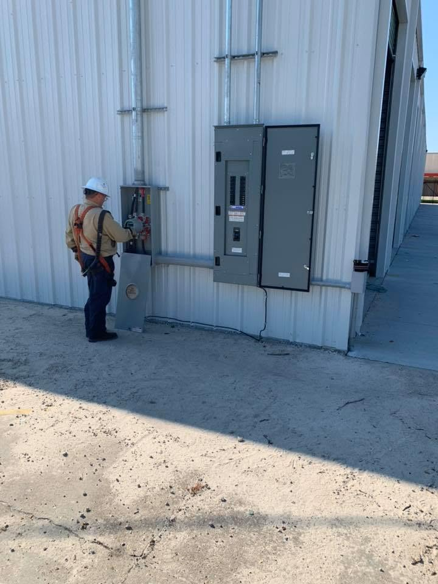

Inicio / Moore Electric — D'Iberville, Mississippi
Moore Electric — D'Iberville, Mississippi
ELECTRICISTA EN D'IBERVILLE.
Justo cruzando Back Bay desde Biloxi, D'Iberville está prácticamente al lado — desde casas tradicionales cerca de Rodriguez Street y Big Ridge hasta viviendas más nuevas en Lamey Bridge Road.
Muchos paneles antiguos no fueron pensados para aires acondicionados modernos ni cargadores EV en el garaje. Actualizamos capacidad con orden y entregamos presupuesto por escrito primero.
Para qué me llaman en D'Iberville
- Actualizaciones de panel eléctrico de 100A a 200A y reemplazo de cajas viejas
- Circuitos dedicados de 240V para cargadores EV Nivel 2 y herramientas de garaje
- Protección contra sobretensiones en toda la casa contra tormentas y variaciones
- Actualización de tomas GFCI en cocina y baño y solución de circuitos muertos
- Interbloqueos para generadores portátiles y entradas exteriores resistentes
- Luces empotradas LED, lámparas de cocina y ventiladores para patio y recámaras
Cómo funciona
Llame directo a Devin
(228) 224-9150 lo comunica sin intermediarios.
Evaluación de $75
Se descuenta del trabajo si nos contrata. Revisión completa en sitio.
Presupuesto por escrito
Precio y alcance aprobados antes de iniciar.
Probado y limpio
Panel etiquetado y verificado bajo carga al terminar.
Hagámoslo bien.
Cotización por escrito. Yo mismo contesto mi teléfono.
Visita y evaluación $75 · Precios completos